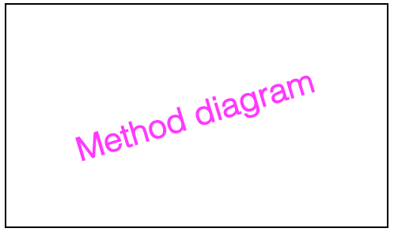

Abstract
Despite the widespread deployment of outdoor cameras, their potential for automated analysis remains largely untapped due, in part, to calibration challenges. The absence of precise camera calibration data, including intrinsic and extrinsic parameters, hinders accurate real-world distance measurements from captured videos. To address this, we present a scalable framework that utilizes street-level imagery to reconstruct a metric 3D model, facilitating precise calibration of in-the-wild traffic cameras. Notably, our framework achieves 3D scene reconstruction and accurate localization of over 100 global traffic cameras, and is scalable to any camera with sufficient street-level imagery. For evaluation, we introduce a dataset of 20 fully calibrated traffic cameras, demonstrating our method's significant enhancements over existing automatic calibration techniques. Furthermore, we highlight our approach's utility in traffic analysis by extracting insights via 3D vehicle reconstruction and speed measurement, thereby opening up the potential of using outdoor cameras for automated analysis.
Paper

Toward Planet-Wide Traffic Camera Calibration
Khiem Vuong, Robert Tamburo, Srinivasa G. Narasimhan
@InProceedings{vuong2024trafficcalib,
title = {Toward Planet-Wide Traffic Camera Calibration},
author = {Vuong, Khiem and Tamburo, Robert and Narasimhan, Srinivasa G.},
booktitle = {WACV},
year = {2024},
}Video
Code
[GitHub]
Acknowledgements
This work was supported in part by an NSF Grant CNS-2038612, a DOT RITA Mobility-21 Grant 69A3551747111, and an IARPA WRIVA contract. Webpage template borrowed from PHOSA.